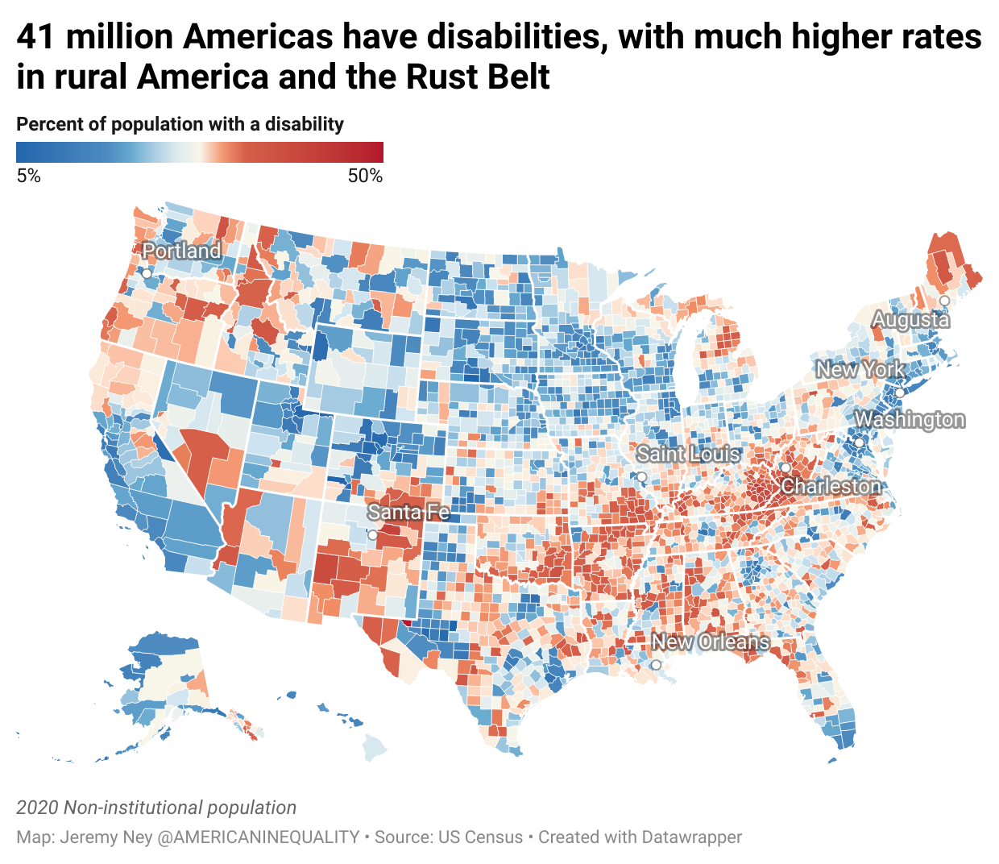

Why is Universal Design Important?
Web Demographics
According to the U.S Census, over 41 million people in the U.S alone have some kind of disability. Various disabilities can lead to challenges in properly accessing websites if they are not coded correctly. For example, blind users utilize screen readers to read page content, and if a page isn't semantic, they won't be able to consume the same content as other users. Users with motor impairments may need to navigate entirely with their keyboards, and this requires proper structuring from the website itself. When a website is properly put together with semantic, accessible practices, everyone can enjoy and interact with its content. Otherwise, one or more groups are entirely excluded from valuable information.
On top of the need for general accessibility, the way people interact with the internet has become so diverse that responsiveness is more important than ever. Around 15% of Americans only have access to the internet through their mobile device (Pew Research Center), so a dedicated mobile-first design is essential. There are so many factors that play into a user's situation, and many of them can be addressed just by applying best practices. The internet has become ubiquitous in everyday life, so it is crucial that everyone has equitable access to what it has to offer.

Benefits for Everyone
One of the best parts about universal design is embedded in its name: the universal benefits. Implementing practices to improve accessibility enhances the experience for users with disabilities, but also enhances everyone's experience! Websites that are properly structured and semantically defined are easy to navigate and understand for anyone who visits the site. When websites follow expected standards, they are immediately understandable by uesrs based on past experiences. Imagine if you every time you played a new computer game, the controls had a completely different layout. You would try to press "spacebar" to jump, but jump might be "k" or "5" or "p" and you'd have no idea how to find it. This is what it's like when websites don't follow the established standards.
IT professionals have a responsibility to understand the use of standards and the importance of making Web applications that work with any kind of device.-Tim Berners-Lee
Legal Requirements
Sometimes companies need more motivation than just doing the right thing. Across the globe, there are legal protections to ensure that companies make their websites accessible. In the US, the Americans with Disabilities Act is a broad set of standards that helps protect the rights of Americans with disabilities. This act can be extended to websites since they have been ruled as places of public accommodation by US courts. Additionally, Section 508 was passed as an amendment to the Rehabilitation Act in 1998. This requires any organizations receiving federal funding to have accessible websites that fulfill all of the standards laid out in Section 508. Both of these pieces of legislation can be leveraged in court cases or audits to ensure that companies are following best practices, giving them a monetary incentive on top of the ethical benefits. Allowing any user to access the site also gives a business more potential customers.
In European countries that are a part of the European Union, regulations also exist. The EU Web Accessibility Directive mandates government websites and apps to be accessible. This includes following a rigorous process of documenting an "accessibility statement", setting up feedback mechanisms for users to submit any issues they're having, and regular audits every three years by the country's governing body. The European Accessibility Act is similar to the ADA in the sense that it is a much broader piece of legislation and can be applied to the private sector. Australia, Canada, and the UK all have similar accessibility requirements, so universal design is more and more prevalent as time goes on.
accessible_forward